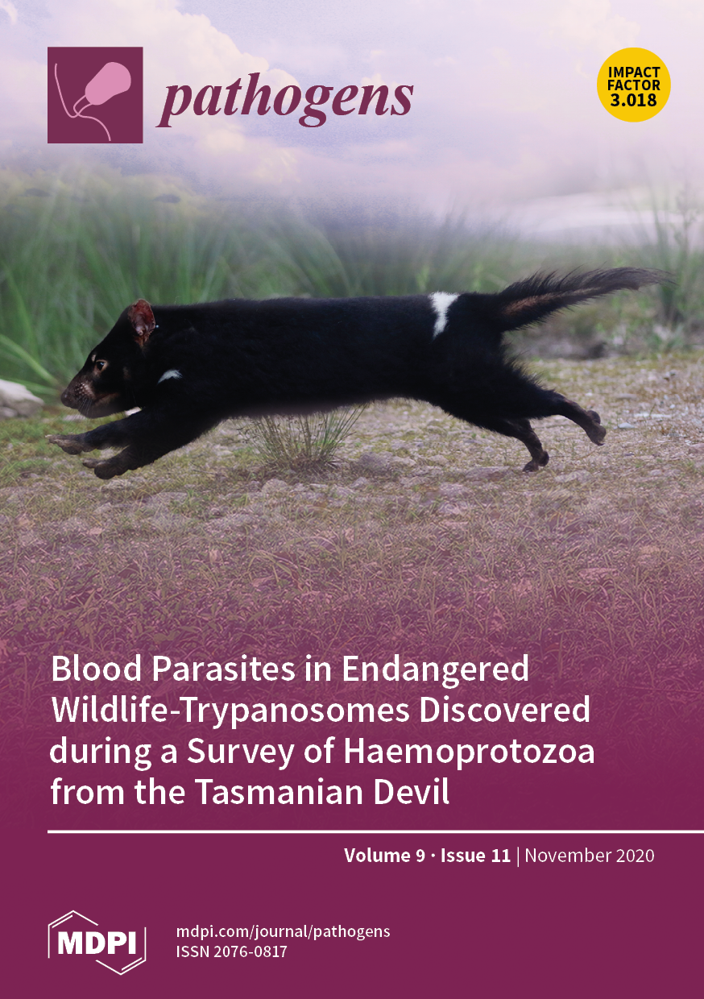
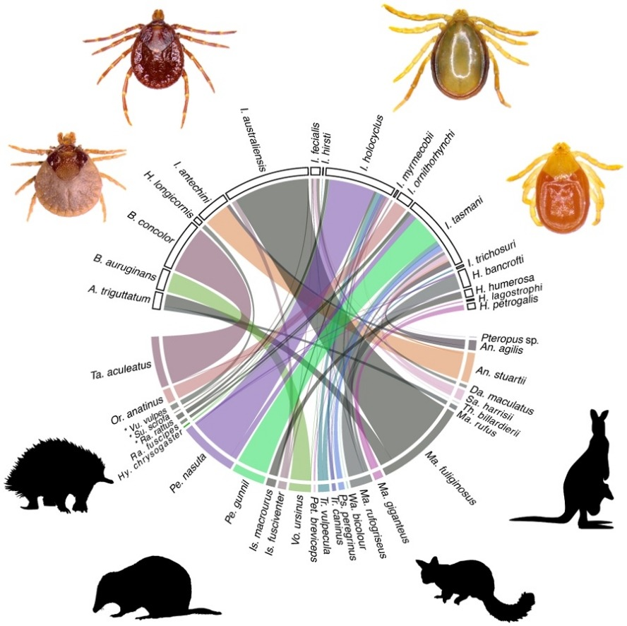

Exploiting the potential of bioreactors for creating spatial organisation in the soil microbiome: A strategy for increasing sustainable agricultural practices.
Gutierrez, C. F., Romero A. N., Egan, S., Holmes, E., Sanabria, J.
2022 | MicroorganismsTo request a copy of any publications, presentations or associated data please email me.
Gutierrez, C. F., Romero A. N., Egan, S., Holmes, E., Sanabria, J.
2022 | MicroorganismsEgan, S., Lettoof, D., Oskam, C.
2022 | Ticks and Tick-Borne DiseasesEgan, S., Taylor, C., Banks, P., Northover, A., Alhstrom, L., Ryan, U., Irwin, P., Oskam C.
2021 | Microbial Genomics
Egan, S., Taylor, C., Austen, J., Banks, P., Northover, A., Alhstrom, L., Ryan, U., Irwin, P., Oskam C
2021 | Current Research in Parasitology & Vector-Borne DiseasesHall, J., Rose, K., Austen, J., Egan, S., Bilney, R., Kambouris, P., MacGregor, C., Dexter, N.
2021 | Journal of Wildlife DiseasesBraima, K., Zahedi, A., Egan, S., Austen, J., Xiao, L., Witham, B., Pingault, N., Perera, S., Oskam, C., Reid, S., and Ryan, U.
2021 | Infection, Genetics and EvolutionBraima, K., Zahedi, A., Oskam, C., Austen, J., Egan, S., Reid, S., and Ryan, U.
2021 | Zoonoses and Public Health
Egan, S., Ruiz-Aravena, M., Austen, J., Barton, X., Comte, S., Hamilton, D., Hamede, R., Ryan, U., Irwin, P., Jones, M., and Oskam, C.
2020 | PathogensBoulet, C., Egan, S., Jones, L., Jonsdottir, T., Power, M., Ralph, S., Tran, L., White, M.1
1 All authors contributed equally, authors are listed alphabetically
Austen, J., Van Kampen, E., Egan, S., O’Dea, M., Jackson, D., Ryan, U., Irwin, P., and Prada D.
2020 | ParasitologyEgan, S., Taylor, C., Austen, J., Banks, P., Alhstrom, L., Ryan, U., Irwin, P., and Oskam C.
2020 | Parasitology Research
Egan, S., Loh, S-M., Banks, P., Gillet, A., Alhstrom, L., Ryan, U., Irwin, P., and Oskam C.
2020 | Ticks and Tick-Borne DiseasesPreprint – bioRxiv Published article – Subscription FigShare data repo
Irwin, P., Egan, S., Greay, T., and Oskam C.
2018 | Microbiology AustraliaSiew-May, L., Egan, S., Gillet, A., Banks, P., Ryan U., Irwin, P., and Oskam, C.
2018 | International Journal of Parasitology: Parasites and Wildlife14th International Symposium on Ticks and Tick-borne Diseases (ISTTBD-XIV) | Online, hosted by German Society for Parasitology
Australian Society for Parasitology Annual Conference | Adelaide, South Australia
Bachelor of Science Honours (molecular biology) | First class
Murdoch University | Perth, Western Australia